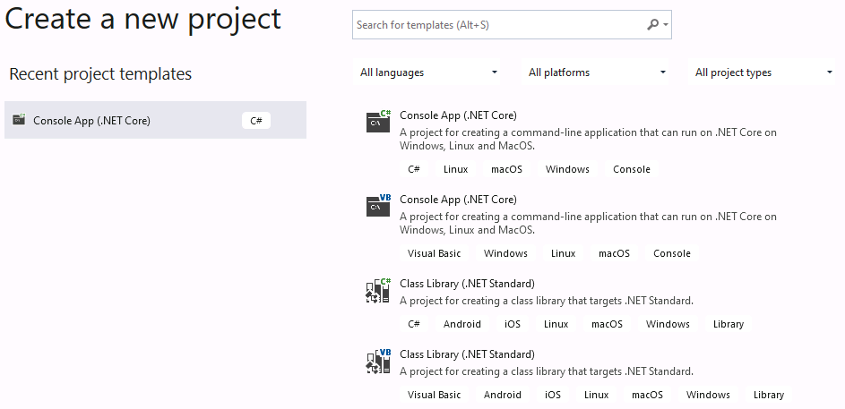
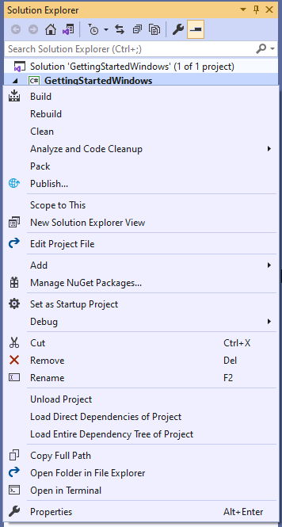
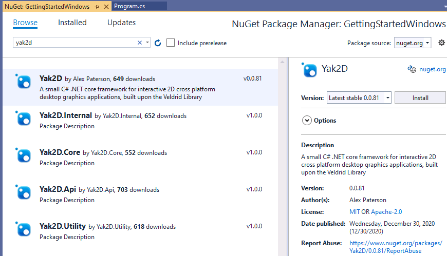
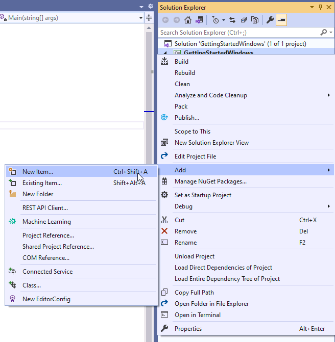
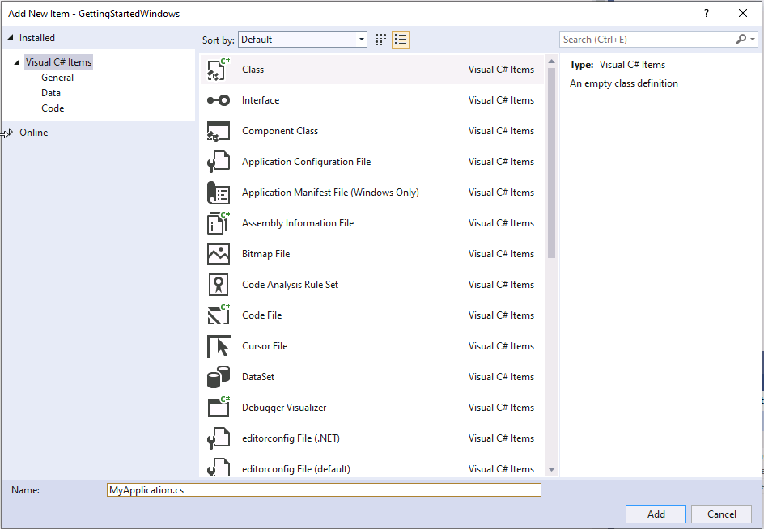
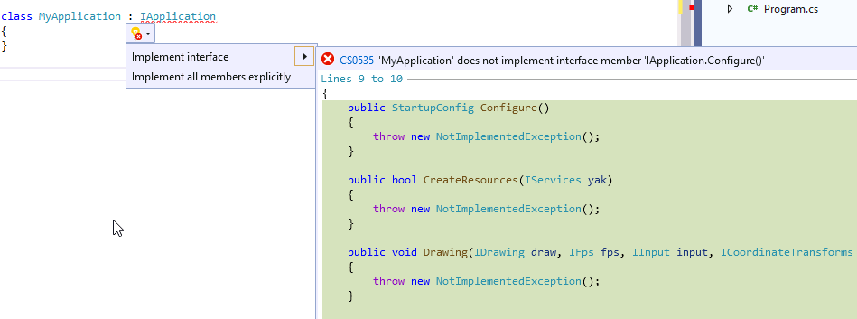
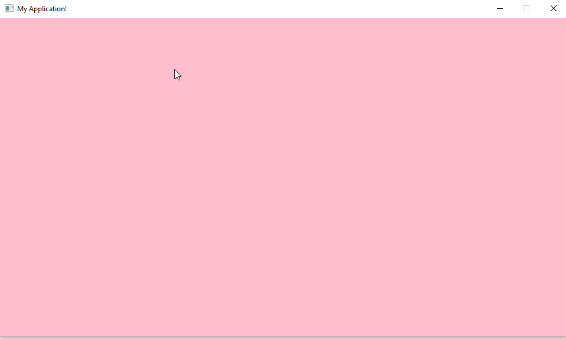

Getting Started
Aim
By the end of this article you will have created a new project that uses yak2D. You will have created the outline of an application, which clears the display to a colour and exits when the escape key is pressed.
This blank project will be used as the starting point for further tutorials (or your own applications!)
Prerequisites
- A desktop OS (Windows, Linux or MacOS)
- Basic C# knowledge
Environment Setup
You wil require software to help you write code
- Windows: Visual Studio
- Linux and MacOS: A text editor of any sort
yak2D applications are built with .NET. yak2D targets the NetStandard2.0 framework.
This tutorial uses the command line tooling dotnet [command] for Linux and MacOS environments. Whilst the command line tools are also available for Windows, using the Visual Studio IDE is described below.
Windows
- Download the Visual Studio IDE. At the time of writing the free version of Visual Studio is Community 2019
- During the installation, install .NET Core desktop development packages (at the time of writing, this is included under the ".NET desktop development" workload option presented by the Visual Studio Installer)
- Open Visual Studio and Create a new Console App (.NET Core). Choose the project name and disk location 
- Once the project is open, add the yak2D nuget packages to your project:
- In the solution explorer, right click on the project and go to "Manage Nuget Packages" 
- In the Nuget Package Manager, navigate to the browse tab
- Search for "yak2D" and install the latest stable version 
- Once the yak2D package has downloaded, and you have accepted any licenses, add a new class file to your project. This file will hold your the root of your application's code:
- In the solution explorer, right click on the project and go to "Add", then "New Item..." 
- Choose "Class" and name your file with a
.csextension. For this tutorialMyApplication.cswas chosen 
- In
MyApplication.csdelete theusingstatements at the top of the file, these are not needed.
With the project set up, ready for code, please scroll down and continue with the writing code section.
Linux
- Download your chosen text editor
- Install .NET SDK
The installation method may vary depending on your linux flavour, information for common distros can be found here
As an example, for Ubuntu 20.10 and .NET 5, the following terminal commands can be used:
- Add the Microsoft package signing key to your list of trusted keys and add the package repository:
wget https://packages.microsoft.com/config/ubuntu/20.10/packages-microsoft-prod.deb -O packages-microsoft-prod.deb- Install the .NET SDK:
sudo dpkg -i packages-microsoft-prod.deb sudo apt-get update; \ sudo apt-get install -y apt-transport-https && \ sudo apt-get update && \ sudo apt-get install -y dotnet-sdk-5.0
- Install the SDL2 Library
- The installation process will vary depending on your linux flavour
- As example, on Ubuntu 20.10, from a terminal window:
sudo apt install libsdl2-dev libsdl2-2.0-0 - In the terminal, navigate to the folder in which you wish your project folder to be created
- To create a new Console application, type the following command. The name of the project follows the -n tag:
dotnet new console -n GettingStartedLinux
- Navigate to the project directory
cd GettingStartedLinux
- Install Yak2D nuget package:
dotnet add package yak2D
- You will notice
Program.csis already present. We need to add a code file that will contain our implementation of the IApplication interface. You can do this in a number of ways, including using the following command:
touch MyApplication.cs
- Open the empty file in your text editor
- For now we add a simple class definition that we will expand upon in the next section. We put the class definition int the namespace of the project, although that is not strictly required (the namespace must match that which the main function is contained within in
Program.cs):
namespace GettingStarted
{
class MyApplication
{
}
}
With the project set up, ready for code, please scroll down and continue with the writing code section.
MacOS
Under Construction a.k.a waiting for some time with a Mac. Installing .NET on MacOS is relatively easy, please google for a guide. dotnet command line functions then work the same as on a linux distro
Writing Code
At this stage it is assumed you have a .NET core console project created with two source files: Program.cs and MyApplication.cs.
To launch a yak2D application you must create a class that implements the IApplication interface, instantiate an instance of the class, and pass that to the Launcher.Run() method:
In
MyApplication.csadd the following using statement at the top of the file:using Yak2D;In
MyApplication.cslet the class inherrit from the IApplication interface by changing the class definition line from:class MyApplicationto
class MyApplication : IApplicationWe now need to provide implementations of the methods described by the IApplication interface.
- We will tackle each method one at a time. If you are using a variant of Visual Studio or another IDE with the ability, you can ask the editor to automatically fill in blank methods for the interface to save some typing. In Visual Studio (windows) you can navigate to the drop down button under the red squiggly line and click on
Implement Interface:  - Please note: The auto-fill functions are not guaranteed to order the methods in the most logical way. Whilst the order in which the methods appear in the source code file do not matter, it is recommended to re-order your methods in the way described below to better reflect program execution flow and code understanding.
- All methods should be written between the opening curly bracket ({) following
class MyApplication : IApplicationand the next closing curly bracket immediately following. - Implement OnStartup(). This method runs before any other in the application and allows you to add any code you wish to run ahead of the application's other methods. In this instance, we do not have any code we wish to run, so we provide an empty method implementation:
public void OnStartup() { }- Implement Configure(). This method returns an instance of the StartupConfig class, which holds application configuration information. It is called once at application start up. We can use a helper method within StartupConfig to simplify the creation and get some default values. Below we pass a window resolution of 960 by 540 pixels, a string for the window title of "My Application!" and finally we pass
falsefor whether to open the application in fullscreen mode (i.e requesting a windowed application).
public StartupConfig Configure() { return StartupConfig.Default(960, 540, "My Application!", false); }- Implement CreateResources(). All resource creation should be completed within, or be triggered by, this method. It runs once before the main update and rendering loops begin and is also triggered if the application loses it's resources at anytime. A blank application uses no resources so for now an empty method is all that is required. The method must return
trueto indicate to the framework that it was successful:
public bool CreateResources(IServices yak) { return true; }- Implement ProcessMessage(). Ahead of an UpdateStep, this method is called once for every message generated by the framework. Allows the application to be informed about a number of different events, such as a gamepad being added or the window being resized. There are no messages we need to process for the blank application, so you guessed it, we create another empty method implementation:
public void ProcessMessage(FrameworkMessage msg, IServices yak) { }- Implement Update(). Called during an UpdateStep. Used for non-drawing and rendering application logic. For this application we simply return
false(which triggers an application shutdown) if theescapekey is pressed.
public bool Update(IServices yak, float secondsSinceLastUpdate) { return !yak.Input.IsKeyCurrentlyPressed(KeyCode.Escape); }- Implement PreDrawing(). The first user method of three called during a RenderStep. A place for non-drawing or rendering code to be executed ahead of drawing and rendering. Again, for a blank application, we create an empty method.
public void PreDrawing(IServices yak, float secondsSinceLastDraw, float secondsSinceLastUpdate) { }- Implement Drawing(). The second user method of three called during a RenderStep. As the name implies, this method is used for drawing, namely creating and submitting DrawRequests to DrawStages. The blank application does not contain a DrawStage and so an empty method is created.
public void Drawing(IDrawing draw, IFps fps, IInput input, ICoordinateTransforms transforms, float secondsSinceLastDraw, float secondsSinceLastUpdate) { }- Implement Rendering(). The third user method of three called during a RenderStep. In this method the user must build the RenderQueue by calling methods provided by the IRenderQueue instance. In this example, the only action to queue is to clear the window's RenderTarget colour data with a colour as well as clearing its depth buffer. Note: A user may choose for the framework to automatically clear the window's RenderTarget's colour and depth ahead of actions placed into the RenderQueue. In fact, the defaultStartupConfig provided by the helper method used in Configure() above is set to auto-clear. The auto-clear colour is always transparent black RGBA(0, 0, 0, 0). Therefore in the code below, the depth clear is not technically required
public void Rendering(IRenderQueue q, IRenderTarget windowRenderTarget) { q.ClearDepth(windowRenderTarget); q.ClearColour(windowRenderTarget, Colour.Pink); }- Implement Shutdown(). Called upon application exit. A place for the user application to release any acquired resources not related to the yak2D framework and that will not be disposed of automatically. In this blank application, an empty method suffices.
public void Shutdown() { }- We will tackle each method one at a time. If you are using a variant of Visual Studio or another IDE with the ability, you can ask the editor to automatically fill in blank methods for the interface to save some typing. In Visual Studio (windows) you can navigate to the drop down button under the red squiggly line and click on
Next modify
Program.csto create an instance of theMyApplicationclass and pass it to the launcher's run method.- Add the following using statement at the top of the file:
using Yak2D;- Delete any code in the
Main()method (likely `Console.WriteLine("Hello World!");', replacing the method with the following:
static void Main(string[] args) { Launcher.Run(new MyApplication()); }
Running the blank application
Windows
Hit F5 or click on the green play button in the Visual Studio IDE.
Linux and MacOS
In a terminal window, navigate to the directory that contains the application project file `.csproj' and execute the following command:
dotnet run
Result
If you followed the steps correctly you should be presented with a window with a pink background. If you press escape the application should exit.

Complete Code Listing
Program.cs
using System;
using Yak2D;
namespace GettingStarted
{
class Program
{
static void Main(string[] args)
{
Launcher.Run(new MyApplication());
}
}
}
MyApplication.cs
using Yak2D;
namespace GettingStarted
{
class MyApplication : IApplication
{
public void OnStartup() { }
public StartupConfig Configure()
{
return StartupConfig.Default(960, 540, "My Application!", false);
}
public bool CreateResources(IServices yak)
{
return true;
}
public void ProcessMessage(FrameworkMessage msg, IServices yak) { }
public bool Update(IServices yak, float secondsSinceLastUpdate)
{
return !yak.Input.IsKeyCurrentlyPressed(KeyCode.Escape);
}
public void PreDrawing(IServices yak, float secondsSinceLastDraw, float secondsSinceLastUpdate) { }
public void Drawing(IDrawing draw, IFps fps, IInput input, ICoordinateTransforms transforms, float secondsSinceLastDraw, float secondsSinceLastUpdate) { }
public void Rendering(IRenderQueue q, IRenderTarget windowRenderTarget)
{
q.ClearDepth(windowRenderTarget);
q.ClearColour(windowRenderTarget, Colour.Pink);
}
public void Shutdown() { }
}
}